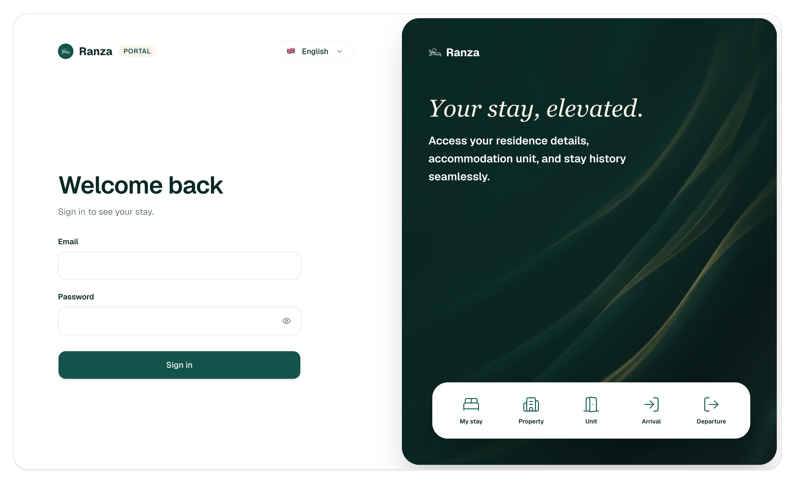
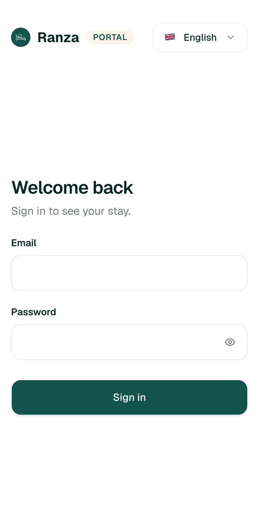
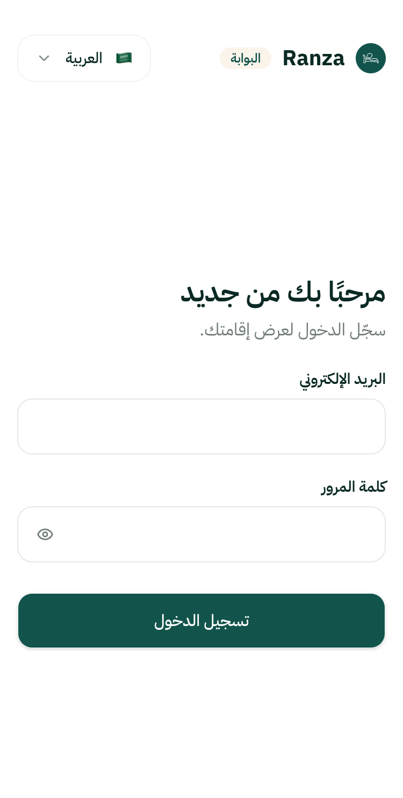
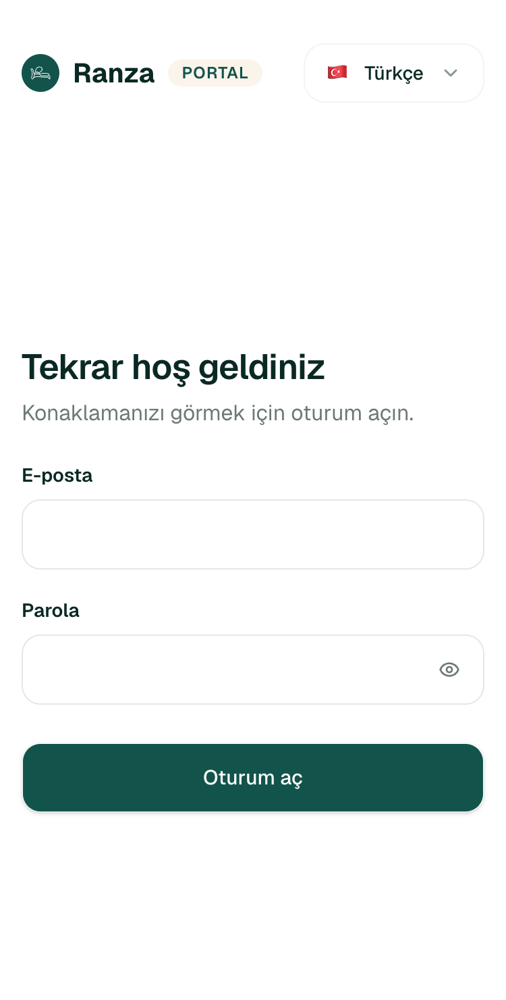
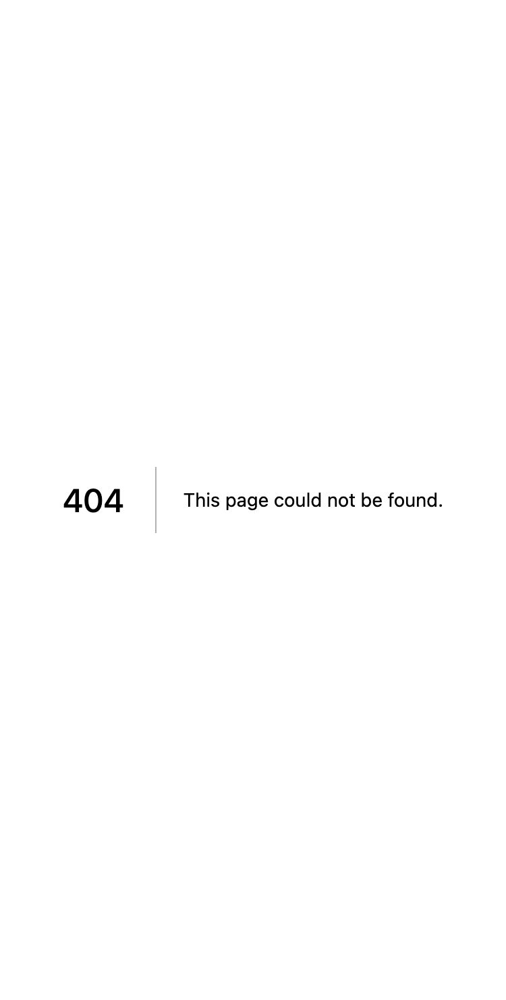
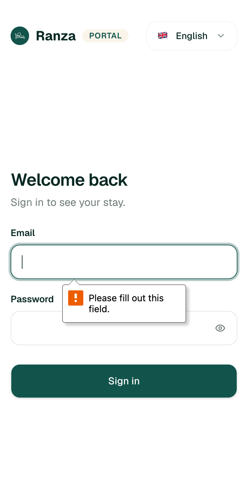
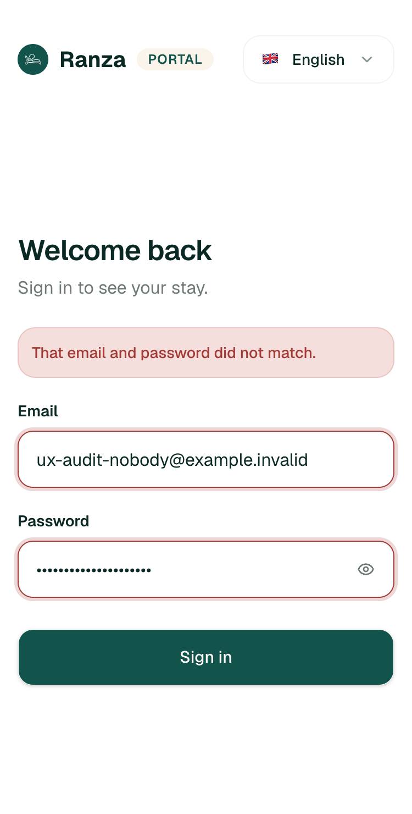
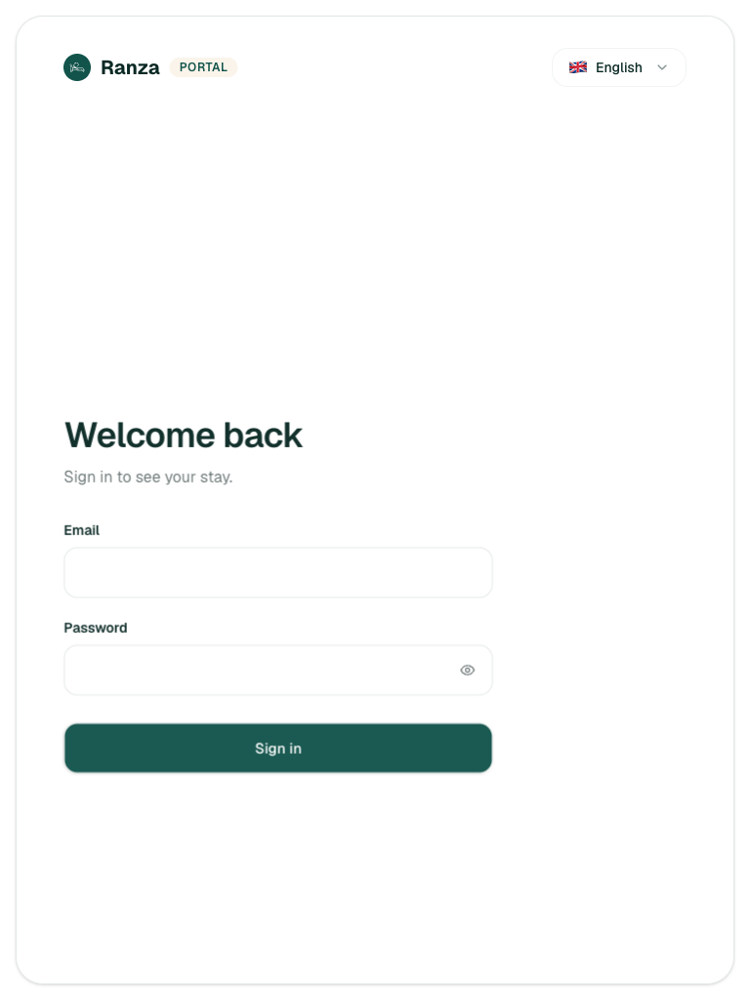
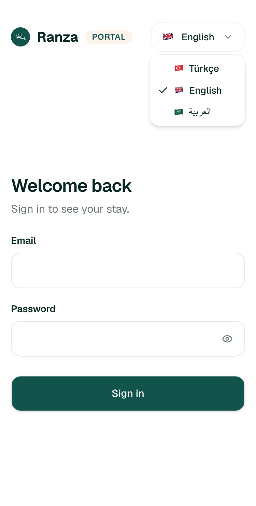
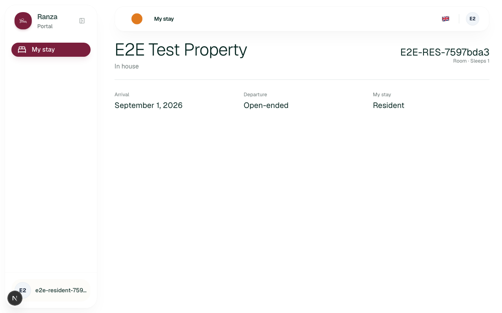

I did not see the signed-in experience. No guest or
Resident test account exists in CLAUDE.local.md,
docs/ or docs/runbooks/, and the staff
accounts are not valid on this host. I did not invent, create or reset
one. Everything about /stay below is
inferred from apps/guest-portal,
ADR 0009, the edge-case CSVs and one older evidence screenshot.
1. Could this guest use it unaided? The sign-in page, yes: it is clean, fits 375 px with no horizontal scroll, uses 16 px inputs and mirrors correctly in Arabic. What follows sign-in answers one question in five: dates and room. Not the bill, not checkout time, not how to ask for anything.
2. Biggest risk: a locked-out guest has no way forward. There is no forgot-password page (404, verified), no "how do I get access" line, no contact. In addition, nothing in the application code I searched ever links a hotel stay to a portal account, so most hotel guests would reach the empty state even with a working password.
3. A departed or cancelled guest sees "You have no stay to show", the same screen as someone who was never booked. That is deliberate (ADR 0009) but it reads as a lost booking.
| ID | Severity | Where | What happened | Expected | Suggested fix | Effort | Evidence | Basis |
|---|---|---|---|---|---|---|---|---|
| GP-01 | blocks work | /en/sign-in, signed out |
No forgot-password link, no help line, no "no account? ask
reception". /en/forgot-password and
/en/reset-password return the bare 404. A wrong
credential shows only "That email and password did not match." with
no next step.
|
A guest who cannot sign in can recover, or is told who to ask. | Add a "Forgot password" path, or at minimum a line naming the front desk. Needs the invite/reset flow decided first (see Not built). | M | 05, 07; reproduced Y (404 twice) | verified |
| GP-02 | causes errors | /en/stay, signed in, stay departed or cancelled (and any account without a linked stay) |
The query only returns reserved and
in_house stays, so a guest after checkout, or after a
cancellation, gets "You have no stay to show. Details appear here
once a Property has set up your stay." The copy tells someone who
just checked out that their stay has not been set up. The "Departed"
and "Cancelled" labels in messages.ts can never be
shown (dead copy).
|
A departed guest sees their stay marked as departed; a cancelled one sees "Cancelled". At minimum the empty text does not claim the stay was never set up. | Neutral empty copy ("No current stay. If you expected one, contact the property.") now. Separate decision: allow a read-only departed/cancelled row, which reopens ADR 0009's deliberate indistinguishability. | S for copy, M for the policy change |
code: packages/ranza/stays/src/module.ts (where stay.status in ('reserved','in_house')); not seen live
|
inferred |
| GP-03 | slows me down | Any link without a locale, signed out |
/ redirects to /tr/sign-in whatever the
browser language is (my browser sent English).
/stay with no locale is a 404. The locale lives only in
the URL; no cookie, no localStorage (both empty). A guest who
switches to Arabic and later opens the bare link gets Turkish again.
|
First visit follows the browser language; a chosen language sticks;
/stay works.
|
Negotiate on Accept-Language at /, remember the choice
in a cookie, redirect locale-less paths.
CF-DEF-01 already defers the Organization default
language.
|
M | fetch results in session; 04 shows Turkish default | verified (redirects); persistence absence verified for cookie and localStorage |
| GP-04 | slows me down | Any unknown route, e.g. /en/forgot-password |
Next's default English "404 This page could not be found." with no
styling, no portal chrome, no link back, whatever the locale. The
app has no not-found, error or
loading files, so a runtime failure on
/stay would fall to the framework default too. The
portal also has no client error reporter (stated in
sign-in-form.tsx).
|
A localized not-found with a link to sign-in or My stay; an error boundary with a retry. |
Add not-found.tsx, error.tsx, and wire the
reporter.
|
S to M | 05; reproduced Y | verified (404), inferred (no boundaries, found by file search) |
| GP-05 | polish | /en/sign-in, desktop width | The showcase panel promises "residence details, accommodation unit, and stay history". Stay history is not built. The white card of "services" lists Property, Unit, Arrival, Departure, which are fields, not services. "Residence" and "Unit" are dormitory vocabulary on a page a hotel guest reads. The panel is hidden below 1024 px, so phone guests never see this. | Copy that matches what the page does today. | Drop "stay history"; use "room" for hotel properties. | S | 01; reproduced Y | verified |
| GP-06 | polish | /en/stay, signed in | The stay-type fact is labelled "My stay" (the page's own name) and shows "Guest" or "Resident", so the screen reads "My stay: Resident". Status "In house" is hotel-internal jargon; departure "Open-ended" for a hotel guest is odd. The account menu is given the email as the display name, so long addresses truncate (see the older evidence shot). | Label "Guest type" or drop the row for hotel guests; "Staying now"; show the booked end date. | Rename the label key; reword status; pass a real name when one exists. | S |
09 (older build, same label); code stay/page.tsx,
layout.tsx
|
inferred |
| GP-07 | polish | /en/stay, signed in, two current stays | Stays are ordered newest start first and drawn as stacked sections with no divider or heading. A guest with an in-house stay and a later booking sees the future one on top. | Current stay first; sections visibly separate. | Sort in-house first; add a divider. | S | code only | inferred |
| GP-08 | polish | /en/sign-in after a wrong credential |
Focus ends on BODY after the failed attempt (the submit
button is disabled while pending, so focus drops). A keyboard or
screen-reader user has to tab from the start. The error box itself
is announced and the fields are marked invalid, which is good.
|
Focus returns to the first invalid field or the error. | Move focus to the email field on failure. | S | 07; reproduced Y (once, to respect the rate limit) | verified |
| GP-09 | polish | /en/sign-in at 375 px | The show-password button is 36 x 36 px and each language menu item is 32 px tall, both under the usual 44 px touch target. The language pill (44 px) and submit (52 px) are fine. | 44 px target. | Enlarge the hit area. | S | 02, 10; measured by script | verified |
| GP-10 | polish | All portal pages |
Every page title is "Ranza" (even the 404 is its own default), so
browser tabs and history cannot tell sign-in from My stay. The
sign-in page has no main, nav or
header landmark. An empty submit shows the browser's
own bubble ("Please fill out this field.") in the browser's
language, not the page's, with no inline message.
|
Page-specific titles; a main landmark; messages in the
page language.
|
Per-page generateMetadata, wrap form in
main, custom validity text from the catalogue.
|
S | 06; script output | verified |










docs/evidence/m1/RANZ-47 (earlier
build, branding since changed): the only signed-in view I could find.
Not a live capture.
| Guest situation | What the page shows | Judgement |
|---|---|---|
| Upcoming (reserved, linked to the account) | Property name, "Reserved", room name, room type, capacity, arrival and departure dates, stay type | Works. No check-in time, no days-to-go. |
| In house | Same, status "In house" | Works for dates and room. No checkout time, no bill. |
| Departed | "You have no stay to show" | Misleading (GP-02). |
| Cancelled | Same empty state | Misleading (GP-02). |
| No linked stay, staff member, subscription lapsed, capability off | Same empty state, by design | Safe, but gives the guest no next step. |
| Two current stays | Stacked, newest first | GP-07. |
| Job | Pass test (written first) | Result | Seconds | Clicks |
|---|---|---|---|---|
| Open the portal link on my phone | Sign-in fits 375 px, no horizontal scroll, no zoom needed on focus | Pass (scrollWidth 375, 16 px inputs) | ~5 | 0 |
Open /en/stay while signed out |
Lands on sign-in in the same language |
Pass for /en and /ar;
/stay with no locale is a 404
|
~3 | 0 |
| Sign in with the wrong password and recover | Error is clear and a way forward is offered | Error clear: pass. Way forward: FAIL (GP-01) | ~20 | 1 submit (single failed attempt, 401, then stopped) |
| Read it in my language and keep it that way | Language changes; still mine on the next visit |
Partial: tr, en, ar each render fully and Arabic mirrors; not
remembered (GP-03). The dropdown opens, lists each language in its
own name with a check on the current one, and its three links are
plain /tr|en|ar/sign-in (verified, shot 10); I switched
pages by URL and did not follow the links.
|
~30 | 1 to open the menu |
| Find my room and dates | Within one screen, no scrolling at 375 px | Not run: no guest credentials. Code puts the room name large opposite the property, dates below. | n/a | n/a |
| See my bill | A balance is visible | FAIL by absence: not built (FO-DEF-11) |
n/a | n/a |
| Ask for something (towels, a late checkout) | A request can be raised |
FAIL by absence: no route (/en/requests is 404), no
code in apps/guest-portal. Not built.
|
n/a | n/a |
| Under pressure: locked out at midnight | Some route to help within two taps | FAIL (GP-01) | ~15 | 2 |
stayStatus catalogue still has four
labels, two unreachable.
docs/roadmap.md row "Guest and Resident services":
"Missing: Guest Portal submission side". No route or form exists in
apps/guest-portal/src; /en/requests is 404.
Staff-side requests exist (GX-S1-*).
verified (404) and
inferred (code).
FO-DEF-11.
MT-DEF-02.
OwnStay, so there is nothing to show. I found no
deferred row for them.
packages/ranza/stays or
packages/ranza/reservations that writes
stays.user_id. The column is documented as nullable and
"most Stays are created by Staff for someone who has never signed in"
(OA-S4-06). I found no invite, link or sign-up flow for
guests. inferred: I could not rule out a path
I did not search, such as a seed script. Email and password sign-up is
enabled in the auth module and the Portal has no sign-up screen; I did
not touch that API.
apps/guest-portal/README.md).
sign-in-form.tsx.
CF-DEF-01.
dir="rtl", flag and
chevron swap sides, labels right-aligned). Turkish and Arabic copy exist
for every string. verified
noValidate, and in the network
list). verified
/en/stay and /ar/stay redirect to
sign-in in the same language, without a loop.
verified